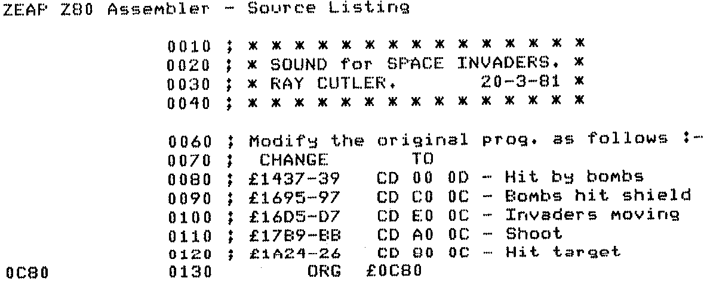

INMC 80 News |
May–September 1981 · Issue 4 |
| Page 13 of 71 |
|---|
I recently got a Centronics 737 printer and with the help of a m/c programming genius, a 74123 and a few bits of wire, built a parallel interface, using, of course, the PIO. (The Centronics 737 is a delight to use and the script is most definitely correspondance quality. The write up in the March 81 issue of Practical computing is very fair and I agree with it.)
Now, not a lot of people know this as its never been published before, (I think), but it is possible to insert printer control codes into Naspen with complete success!
I have read the NASPEN documentation countless times and there are absolutely no clues as to this capability.
Some codes appear to be a little tricky, ESCape for example, but if you use the little ‘i’ (insert), it works perfectly. I won’t provide a list as working them out for oneself helps to memorise them, but if anyone would like a list, an SAE will do the trick.
For those interested in how Nascoms are housed, mine for the first 8 months of its life was housed in a settee, complete with PSU. The keyboard cable came from within to the keyboard which used to sit on my knees and the whole setup was very domestic but portability was a real problem!
I eventually bought a Ball Miratel Monitor from Electronic Brokers and shovelled the whole lot in. It was a tight squeeze I can tell you. None the less in that tiny cabinet I have the VDU and all its PSUs, Nascom 2 and all its PSUs, a board to give me seperate vert. and horiz. sync which the monitor requires, a tape drive relay board, a sound board (for the dreaded space invaders), a board for the Sargon chess graphics and last but not least a board for the printer interface.
I would like a 48K board as well as the 32K board but that is absolutely out of the question unless I bring the Nasbus outside the Ball Miratel housing but as everything is contained at the moment it is very neat and tidy.
Finally, I have worked professionally with Ap*le, Sh*rp, P*t and the like, and in my opinion, Nascom is streets ahead of any of them!
C.R. Bruce, Farnham, Surrey.
Space invader freak’s may find this worth a try, it’s a bit messy and slows the action down quite a bit, but visitors seem to prefer the game with sound.
The only hardware mod. is to hook a speaker onto port 0, bit 5, (that’s IC 24 pin 15 for Nascom 2), via a suitable buffer of course.
I read somewhere that someone wanted an approximation to PI better than 22 over 7, how about 355 over 113?
R. Cutler, Birmingham.
| Page 13 of 71 |
|---|